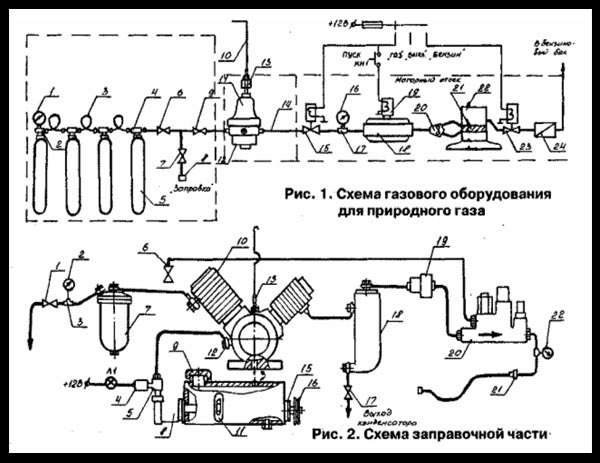
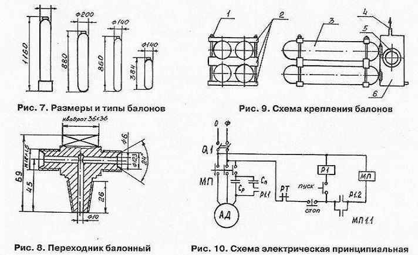
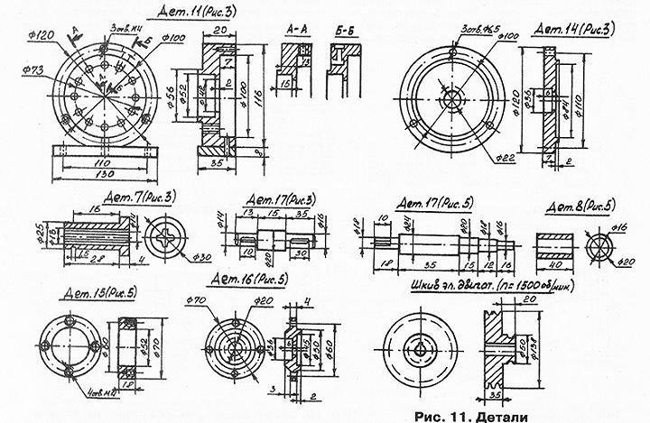

ИЗДАНИЕ 47
Резкое повышение цен на бензин, а в последнее время и сжиженный (баллонный) газ привело к поискам выхода из создавшегося положения. Представляем Вам еще один из выходов.
Дело в том, что двигатель автомобиля может чудесно работать на природном газе, который подается в нашу квартиру. Заправка этим газом обойдется Вам практически бесплатно и в неограниченном количестве. Вы можете ездить практически без ограничений - на дачу, до родственников, на работу и т. д. Затраты на приобретение разработанной нами документации окупаются практически очень быстро. У ваших детей, внуков не будет болеть голова, где взять деньги на заправку автомобиля.
Перевод двигателя на природный газ имеет такие преимущества:
- уменьшается срабатывание деталей двигателя, увели
чивается моторесурс в 1,5-2 раза;
- увеличивается срок службы моторной смазки в 2-2,5
раза;
- совсем отсутствует детонация, уменьшаются ударные
нагрузки на детали цилиндро-поршневой группы;
- высокое октановое число природного газа (104-115)
позволяет его использовать для любых двигателей (ЗАЗ,
ЛуАЗ, ВАЗ, ГАЗ, Москвич, УАЗ и др.). А также в двигателях
иномарок. Это относится и к грузовым автомобилям.
В комплект документации входит следующее:
- описание заправочного устройства, газобаллонной ус
тановки, схема подключения, размещения, правила пользо
вания, регулирование, чертежи переходников, штуцеров,
где приобрести узлы, варианты использования и много дру
гого.
За границей малогабаритные заправочные установки подобного типа выпускают серийно фирмы
"Maschinenfabrik" (Австрия), "Neuman ESSER" (Германия), "Litvin" (Франция) и много других.
1. ВСТУПЛЕНИЕ.
Как было сказано, природный газ может быть прекрасным топливом для Вашего автомобиля. Создана сеть заправочных станций - АГНКС. Необходимо уточнить: есть газовая аппаратура для сжатого газа и аппаратура для сжиженного газа. Аппаратура для сжатого газа использует обычный природный газ - метан, который можно взять из квартирной или промышленной газовой сети. Проблема в том, как этот газ заправить в автомобиль в домашних условиях и потом использовать. Как это сделать - узнаете ниже.
2. ПЕРЕОБОРУДОВАНИЕ АВТОМОБИЛЯ ДЛЯ РАБОТЫ НА ПРИРОДНОМ ГАЗЕ.
На рис. 1 изображена схема газового оборудования для природного газа. Природный газ хранится в баллонах (5), которые соединены трубками высокого давления (3) через переходники (4), которые вкручиваются в баллон вместо вентилей. Через запорный вентиль (6) газ подается на расходный вентиль (9) и поступает в редуктор высокого давления (ВД) (11), где давление газа 200 (130) кг/см-* (атмосфер) снижается до 10 кг/см*. Во время этого процесса газ сильно охлаждается и редуктор при большом отборе газа может замерзнуть, газ перестанет проходить. Чтобы этого не случилось, применяется подогреватель редуктора (12). Дальше газ по трубке низкого давления (14), через электромагнитный клапан (15) попадает в редуктор низкого давления (18), где давление газа еще раз снижается и попадает через тройник (20) в карбюратор (22) пропорционально нагрузке двигателя (в зависимости от положения педали акселератора). Переводя напряжение переключателя П1 на
ЭМ клапан газа (15) или на клапан бензина (23), мы можем на ходу переключать вид топлива. Бензин поступает в карбюратор (22) через топливную помпу (24), вентиль (23). Для запуска двигателя на газе применяется пусковой клапан (19).
На рис. 1 показана упрощенная схема управления ЭМ клапанами. Клапаны 15, 19, 23, редуктор-подогреватель 12, трубки низкого давления можно использовать из комплекта аппаратуры для сжиженного газа. Все это можно смонтировать в двигательном отсеке на своих штатных местах. Это можно сделать в мастерской по установке аппаратуры на сжиженный газ.
Здесь можно и приобрести эти узлы, установить, отрегулировать, проверить. Баллон покупать не надо, это Вам обойдется значительно дешевле. Для наших потребностей он не подходит, потому что рассчитан на малое давление (16 атм) и пробег будет очень малый. Поэтому его необходимо заменить на баллон высокого давления (рис. 7) 200 (150) атм и добавить редуктор высокого давления (11) (рис. 1) для снижения давления из 200 (150) атм до 10 атм. Для этого можно использовать авиационные кислородные редукторы, которые не замерзают, или приобрести редуктор от грузового автомобиля с подогревателем. На крайний случай можно использовать обычный кислородный редуктор для газосварочных работ. Но его необходимо приспособить до наших условий эксплуатации.
Для этого необходимо поменять крышку с большим диаметром резьбы, у верхней части под штуцер и предохранительный клапан со штуцером от редуктора грузового автомобиля. Дело в том, что кислородный редуктор не приспособлен для отвода газа при срабатывании предохранительного клапана или при разрыве мембраны. На штуцера предохранительного клапана и штуцер крышки (13) надевается резиновая трубка (10) (рис. 1) и выводится за пределы кузова. Кроме этого для кислородного редуктора необходимо приобрести жидкостный подогреватель (12) (рис. 1) с кронштейном. Таким образом Вы сэкономите деньги. Следует иметь в виду, что выше указанное относится к кислородному редуктору типа ДКП-1-65. Есть еще редуктор нового типа ЕКО-25-2, к которому не подходит крышка от редуктора грузового автомобиля.
Редуктор ВД устанавливается в двигательном отсеке. Жидкостный подогреватель необходимо включить в разрыв шланга, который идет на печку. Медную трубку из комплекта аппаратуры для сжиженного газа, которая идет в багажник, необходимо заменить на стальную бесшовную трубку 345 J высокого давления от аппаратуры сжатого газа грузового автомобиля. Контроль за работой редуктора ВД производится с помощью манометра (16) (0-25 кг/см*), который вкручивается на место датчика давления редуктора. Для определения количества заправленного газа и контроля давления в баллонах, на конечном баллоне устанавливается манометр высокого давления (1) (рис. 1) (0-250 кг/см').
Заправочный вентиль (7) (рис. 1) служит для заправки баллонов высокого давления от заправочного устройства, которое будет описано ниже, или на заправочной станции -АГНКС. Для этого приобретите заправочный штуцер от грузового автомобиля. Правда, Вас там не встретят с объятиями, но всегда можно договориться. Это важно, если Вы ездите в далекое путешествие. Для соединения баллонов между собой, подключения редуктора ВД, тройников можно использовать только стальные бесшовные трубки (3) высокого давления с внешним диаметром 10 мм и внутренним 6 мм. Чтобы не допустить поломок от вибрации и перекосов, короткие части газопроводов сгибают в виде колец диаметром 100 мм.
Кроме этого, баллоны должны быть установлены на общей раме в гнездах, выложенных резиновой лентой. Весь пакет должен быть сжат шпильками, чтобы не допустить перемещения баллонов. Для каждой марки автомобиля есть свой вариант компоновки. На рис. 9 показан один из возможных вариантов. Кроме этого, конструкция пакета из баллонов зависит от типа баллонов, их количества, что в конечном результате определяет пробег. Пробег зависит от количества газа в баллонах, определение которого затрудняется тем, что при разных температурах воздуха в один и тот же самый объем входит разное количество газа.
Для наших потребностей можно пользоваться упрощенным переходным коэффициентом:
а) при давлении в баллонах 150 кг/см-' - 1 литр объема
баллона, эквивалентный 0,3 л бензина.
б) при давлении в баллонах 200 кг/см' - 1 литр объема
баллона, эквивалентный 0,4 л бензина.
Теперь при среднем расходе автомобилем - 9 л бензина на 100 км и общем объеме баллонов - 50 л (для примера) пробег будет таким:
а) при давлении в баллонах 150 кг/см';
50*0,3=15 л бензина (15*100):9=167 км
Теперь зная это, Вы можете выбрать тип и количество баллонов в зависимости от необходимого пробега. Не следует гнаться за большим пробегом, потому что увеличивается вес, уменьшается объем грузового отсека. Лучше иметь основной комплект баллонов на пробег 80-100 км и дополнительный для дальних поездок.

Конкретно для легковых автомобилей наша промышленность баллонов высокого давления не выпускает. Поэтому приходится использовать их из разных областей техники. На рис. 7 показаны размеры наиболее распространенных типов баллонов ВД. Для наших потребностей могут подойти кислородные баллоны нестандартного уменьшенного размера. Прекрасно подходят баллоны от акваланга для подводного плавания. Выпускаются баллоны из стеклопластика, армованные навивкой стального провода, из композитных материалов. Они очень легкие и крепкие и идеально подходят к нашим потребностям, но дефицитные.
Можно также использовать авиационные или танковые баллоны высокого давления. На крайний случай баллон необходимых размеров можно изготовить из обычного кислородного, вырезав среднюю часть. После этого баллон варится аргонно-дуговой сваркой, просвечивается гамма-дефектоскопом, подвергается гидравлическому испытанию в специализированной организации. В кустарных условиях этим заниматься категорически запрещено.
После установки баллонов вентиля, переходники, заправочный штуцер помещаются в коробку (4) (рис. 9) из мягкой жести, в которую впаивается штуцер (3) и окно (2) для обслуживания, которое устанавливается на уплотнении. Конструкция может быть взята от баллонов для сжиженного газа. На штуцер надевается кусок резиновой трубки и выводится за пределы кузова через окно для заправки бензинового бака или другое место. При хранении автомобиля в гараже на штуцер надевается трубка, которая выводится выше крыши гаража. При таком исполнении Вы будете полностью гарантированы от любых пропусков газа. Прежде чем использовать баллоны, необходимо проверить их рабочее давление, объем, техническое состояние. Внешняя поверхность не должна иметь вмятин, трещин, глубоких царапин и следов коррозии. Возле горловины ВД указывается:
- дата испытания и дата следующего испытания;
- вид термообработки (N - нормализация, W - закалка с
отпуском);
- рабочее давление;
- пробное гидравлическое давление (п225);
- вес фактический, клеймо завода.

Для подключения газопроводов применяются специальные переходники (рис. 8), которые вкручиваются в баллон вместо вентиля, смазав резьбу свинцовым суриком. Момент затяжки переходника - 45-50 кг/м (450-500) НМ. Это можно проконтролировать специальным динамометрическим ключом, который можно одолжить на станции техобслуживания автомобилей. При полностью вкрученном вентиле или переходнике на его резьбовой части должно остаться 2-5 витков резьбы. Размер конусной резьбы (рис. 8) зависит от типов баллонов. Трубки высокого давления имеют безпрок-ладочное ниппельное соединение, которое при затяжке накидной гайки упирается в конусную поверхность штуцера и, деформируясь, герметизирует место соединения. Если Вы приобрели старые трубки, необходимо конец трубки с ниппелем обрезать и надеть новый ниппель, обмазав его суриком, и затянуть накидную гайку. После аккуратной затяжки всех резьбовых соединений открывается заправочный вентиль, подсоединяется заправочное устройство и закачивается им воздух до половины рабочего давления, проверяют соединения, и при отсутствии пропусков закачивают до полного рабочего давления. Пропуски воздуха необходимо устранить после полного стравливания давления. Если пропусков нет, то открывают заправочный вентиль и выпускают полностью воздух из системы и закачивают в баллон газ. После этого открывают расходный вентиль и пускают газ на редуктор ВД, проверяют его работу.
Для этого с помощью штуцера (13) (рис. 1) выставляют давление газа на выходе 10 кг/см^, после этого продувают систему низкого давления газом до полного удаления воздуха, запускают двигатель на газе и проверяют давление на выходе редуктора ВД. Оно при этом может немного упасть. Все работы должны проводится за пределами помещения. После этого проверяется срабатывание предохранительного клапана редуктора. Для этого закручивают плавно штуцер (13) (рис. 1) и плавно повышают давление на выходе редуктора до момента срабатывания клапана. Он должен сработать при давлении 15-17 кг/см1". Если клапан сработает при другом давлении, необходимо отпустить контргайку на клапане и отрегулировать срабатывание. После этого проверяют герметичность основного клапана.
Для этого полностью выкручивают штуцер (13), при этом газ не должен попадать в магистраль низкого давления. Если давление медленно увеличивается, то в редукторе меняют седло клапана или сдают в мастерскую. Если все в порядке, делают пробный выезд и проверяют редуктор низкого давления. Как это сделать, хорошо описано в инструкции по эксплуатации газовой аппаратуры на сжиженном газе и описывать ее нет необходимости, Следует иметь в виду, что при использовании редуктора низкого давления из жиклера для сжиженного газа ваш автомобиль может незначительно потерять динамичность. Чтобы не произошло этого, можно рассверлить жиклеры в редукторе на 1-2 десятки, но тогда уменьшится пробег и экономичность. Так что решение за Вами.
3. ОПИСАНИЕ ЗАПРАВОЧНОГО УСТРОЙСТВА.
Теперь о главном - как заправлять баллоны автомобиля природным газом. Для этого необходим компрессор высокого давления (до 200 кг/см^). Для этого можно использовать компрессоры типа ГП4, НГ-2, АКГ-2, но они требуют мощного электродвигателя, что нам не подходит. Оптимальный вариант - это применение авиакомпрессора АК 150С. Он применяется на современной бронетехнике и в авиации. Он достаточно малогабаритный, легкий, требует маломощного электродвигателя 1,5-3 кВт. что разрешает его подключать к квартирной или гаражной электросети.
Схема заправочного устройства показана на рис. 2. От газовой сети по резиновому шлангу (от газосварочного аппарата) газ через вентиль подводится до газового фильтра (7). Напорометр (2), подключенный через переходник (3), служит для контроля давления в газовой сети. Газ в фильтре (7) очищается от посторонних примесей и подается в компрессор (10), где повышается до 150 кг/см^. Далее газ подается на влагоотделитель (18), фильтр газа высокого давления (19), автомат давления (20) типа АДУ-2С. После этого газ подается на заправочный вентиль. При повышении давлении выше 150 кг/см' открывается клапан АДУ 2 и газ возвращается по трубке (23) на вход компрессора. Напорометр типа НМП 100 применяется с границами измерений 0-400 мм вод. ст. Функцию газового может выполнять новый топливный фильтр тонкой очистки топлива дизельных двигателей. Для выпуска конденсата из влагоотдели-теля служит кран (17). Для контроля за давлением на выходе компрессора служит манометр (22) (0-250) кг/см^. Элементы 18, 19, 20 (рис. 2) используются от воздушной системы танка. В принципе можно обойтись без автомата давления АДУ-2, но тогда нужно постоянно контролировать давление на выходе, чтобы не было его превышения.
На рис. 4 показана схема размещения отверстий и главных параметров компрессора. Компрессор не имеет собственного узда привода и системы смазки. На рис. 3 показан вариант исполнения узла привода компрессора. На фланец компрессора (1) крепится с помощью жести, шпилек с гайками (8) через прокладку (10) корпус (11). Снизу к корпусу приваривается пластина (12) для крепления компрессора с узлом смазки (рис. 5). В корпус (11) (рис. 3) запрессовывается подшипник (4) типа 205. В подшипник запрессовывается втулка (7) из шлица, которая крепится стопорным кольцом (19). Во втулку с одной стороны входит шли-цевой вал (6) компрессора, а с другой стороны запрессовывается вал (17), шпонка которого входит в шлицы втулки (7). Это сделано для того, чтобы не нарезать шлицы на вал (17). После запрессовки вал (17) аккуратно прихватывается к втулке (7) сваркой. После этого корпус (11) закрывается крышкой (14) с сальником (13). Крепится крышка болтами (5). На другой конец вала (17) насаждается приводной шкив (15) со шпонкой (16). Узел смазки компрессора показан на рис. 2 и рис. 5. Основанием служит бачок (24) (рис. 2), который можно изготовить из прямоугольного профиля или сварить из жести. Сверху к бачку крепится узел привода с компрессором. Отверстие (13) (рис. 3) должно совпадать с отверстием (11) (рис. 5) бачка. Сверху бачка в удобном месте вырезается отверстие, к которому приваривается заливная горловина (3) и крышка (2) (рис. 5). В нижней части бачка просверливается отверстие под сливную пробку (14) (рис. 2). В боковой стенке бачка высверливается отверстие под масляную помпу (1) и вал привода помпы (17). Масляная помпа крепится к стенке бачка шпильками. Отверстие (4) (рис. 5) служит для подачи масла в помпу. Валы (6) и (17) соединяются с помощью пластины (7) и втулки (8). Для крепления подшипника (12) служит корпус (15) с крышкой (16), сальником (13). Крышка крепится к корпусу с помощью болтов (14). На вал (17) надевается шкив (18) со шпонкой. Масляная помпа используется от автомобиля ГАЗ-51, 52, 69, но следует иметь ввиду, что помпы отличаются длиной приводного вала. Для контроля за уровнем масла служит смотровое окно (11) произвольной конструкции.
Работает система смазки так. Вращающий момент от шкива электродвигателя через ременную передачу передается на шкив (16) (рис. 2), (18) (рис. 5) и через вал (17), втулку (8) и пластину (7) передается на вал (6) привода помпы (1). Масло поступает через отверстие (4) в помпу (1) (рис. 5), (8) (рис. 2), проходит через переходник (3), в который вкручен автомобильный датчик давления (4) и по трубке подается на входной штуцер (12) подачи масла в компрессор. Штуцер (12) на рис. 2 условно развернут. Он вкручен в отверстие (3) (рис. 3). Диаметр резьбы зависит от имеющейся у Вас трубки, которую можно использовать от гидравлической системы автотракторных агрегатов. Далее масло проходит по смазочным каналам компрессора (рис, 3, рис. 4), собирается в нижней части и выбрасывается через отверстие слива масла рис. 4, рис. 11 (дет. 11) потом стекает через

отверстие (13) (рис. 3) в бачок (24) (рис. 2) Часть масла проходит через подшипник (4) (рис. 3) и смазывает его.
Деталь (7) (рис. 11) можно изготовить из шестерни привода компрессора, которую необходимо приобрести. Для этого необходимо сточить зубчатый венец до размеров, показанных на рис. 11 (дет. 7).
К датчику давления (4) (рис. 2) можно подключить автомобильную лампочку. Вместо датчика можно подсоединить манометр для контроля. Для того, чтобы отвести газ, который прорвался через поршневые кольца в корпус узла привода, служит отверстие с резьбой у верхней части корпуса (рис. 11), (дет. 11), разрез А-А, в которое вкручивается штуцер (13) (рис. 2). На штуцер надевается резиновая трубка и выводится выше крыши гаража, дома. Хотя в конструкции заправочного устройства предусмотрена локализация возможных выбросов газа в помещение, мы советуем установить его снаружи помещения. Конструкция компрессора разрешает закачивать газ любого давления. Но необходимо помнить, что при работе компрессора при очень низком давлении или полном отсутствии газа на входе, при полностью открытом главном кране, на входе компрессора может создаться разряжение и компрессор вместо газа начинает тянуть воздух через неплотности в сальниках кранов и т. п. Поэтому перед заправкой газа в баллон необходимо дать поработать компрессору несколько минут в атмосферу до полного удаления воздуха из заправочного устройства.
В среднем заправка баллонов газом длится 1-1,5 часа. Чтобы уменьшить время заправки, можно спарить два компрессора. Владельцам грузовых автомобилей можно использовать 4 компрессора.
На рис. 10 показана принципиальная электрическая схема включения 3-х фазного электродвигателя в однофазную сеть. Напряжение на двигатель АД подается через автоматический выключатель Q1, магнитный пускатель МП. При нажатии кнопки "пуск" срабатывает реле Р1, которое своими контактами Р1.2 подает напряжение на катушку пускателя МП и подключает пусковые конденсаторы Сп контактами Р1.1. При этом срабатывает пускатель и подключает двигатель и рабочие конденсаторы Ср к сети. Одновременно замыкаются блок-контакты пускателя МП 1.1 и пускатель становится на самоблокировку. При отпускании кнопки "Пуск" Сп отключается. При нажатии на кнопку "Стоп" или при срабатывании реле тепловой защиты двигателя РТ, цепь размыкается, пускатель отключается, отключается двигатель и схема возвращается в исходное положение. При подключении обмоток двигателя треугольником Ср=4800 (1ном/11), где 1ном - номинальный ток двигателя, U - напряжение в сети. Сп=(2-3)Ср.
4. ПРАВИЛА ТЕХНИКИ БЕЗОПАСНОСТИ ПРИ ЭКСПЛУАТАЦИИ АВТОМОБИЛЯ И ЗАПРАВОЧНОГО УСТРОЙСТВА.
Необходимо знать, что природный газ легче воздуха и поднимается вверх, в отличие от сжиженного, который стелится по земле, заполняет все щели, подвалы. Поэтому при эксплуатации необходимо учитывать эту особенность.
Перед каждым выездом и возвращением в гараж, после технического обслуживания и ремонта необходимо делать проверку герметичности газовой системы. Наиболее доступные способы обнаружения пропусков газа - это контроль по запаху и обмыливание мыльным раствором. При появлении запаха газа во время движения необходимо устранить неисправность. Если вы не можете устранить неисправность, необходимо выпустить газ из баллонов в атмосферу (при отсутствии поблизости людей, открытого огня, других автомобилей). При замерзании редуктора и запуска двигателя в зимний период для прогрева необходимо пользоваться горячей водой, применять открытый огонь категорически запрещено! При загорании газобаллонной аппаратуры необходимо перекрыть вентиля, выключить систему заправления. Для тушения огня необходимо иметь под рукой углекислый огнетушитель. При этом необходимо поливать баллоны водой, чтобы не допустить повышения в них давления.
Ремонтные работы газобаллонной аппаратуры следует проводить при отсутствии давления газа в баллонах. Категорически запрещено выпускать газ в помещение.
При заезде в гараж необходимо перекрывать магистральный расходный вентиль и при включенном двигателе срабатывать газ системы. После длительной стоянки автомобиля пуск двигателя необходимо проводить при поднятом капоте.
Раз в три года необходимо проверять баллоны высокого давления гидравлическим испытанием, раз в год - необходимо сдавать на проверку. К поверхности баллонов категорически запрещено крепить сваркой конструктивные элементы.
При заправке автомобиля необходимо контролировать давление газа на входе и выходе компрессора, температуру цилиндров, давление в системе смазки. Во время заправки в автомобиле не должно быть людей. При обнаружении пропусков газа заправку необходимо выполнять при следующих условиях: заправку делать только при закрытом расходном вентиле, при заправке не стоять возле заправочного шланга, не подтягивать гайки во время заправки под давлением, не стучать металлическими предметами по деталям заправочной системы. Отсоединять заправочный шланг необходимо только после закрытия заправочного вентиля. При достижении рабочего давления в баллонах необходимо выключить двигатель компрессора, закрыть заправочный вентиль, закрыть вентиль на входе компрессора.
В заключении хотелось бы сказать, что наша задача заключается в том, чтобы дать Вам упрощенную, доступную и в тоже время безопасную и работоспособную конструкцию, которую можно собрать за достаточно короткое время и получить удовольствие от своей работы. Надеемся, что это нам удалось.
Уникальные издания.